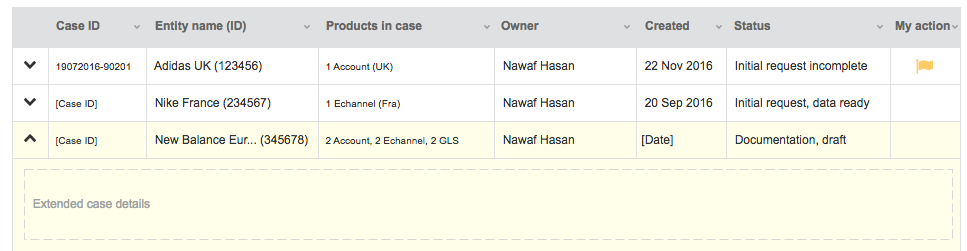
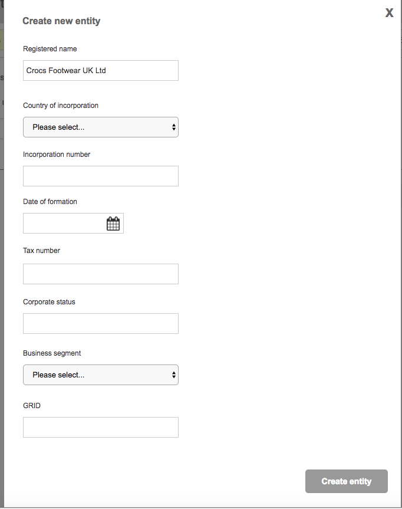

Page: Case List
Component Name: listCases
Description: CI/Customer Logs in and is presented with a list of cases they have access to

Endpoint: GET /cases
Parameters: none
Returns: JSON array of cases
Example:
{{displayJSON(listCases)}}
| {{case.caseId}} |
{{case.entities[0].entityName}} |
- {{product.productDescription}}
|
Notes:
Access to cases and customer/ci differences determined by the API/auth token
Associated child cases will be sent along with the parent.
Case list id will need to be passed to the create case page so that we can resume cases started previously.
Component Name: newCase
Description: CI presses new case button
Endpoint: POST /cases
Parameters: none
Return: Case id for newly created case
Example:
{{displayJSON(createCase)}}
{{createCase.caseId}}
Notes: We will have to use this received case Id to redirect to the create case page
The id will also be passed in a similar way from the case list component.
Page: Create Case
Sub page: Entities
We will need to get the case details on page init, as we might be resuming a case, i.e. selecting an existing case from the case list.
The search entities component should not be worked on yet it is low priority.
Component Name: searchEntities
Description: CI is brought to the entities section
Endpoint: GET /entities
Parameters: search_criteria TBC
Return: JSON array of entity objects
Example:
{{displayJSON(searchEntities)}}
- {{entity.entityId}} {{entity.entityName}}
Component Name: searchEntities_addSelected
Description: The CI selects to add the entities selected from their search
Endpoint: POST /{caseId}/entities/associate
Parameters: list of caseids to associate with case.
Example:
{{displayJSON(searchEntities_addSelected)}}
Return:none
Example:{}
Component Name: searchEntities_createEntity
Description: The CI selects create entity as the entity is not in the list
Endpoint: This will need to open a new modal, pre-filled with the text entered on the search as the new entity name
Parameters: TBC. This will be decided at a later date as it doesn't require the experience API.
Component Name: entityConflicts
List of entities that will be retrieved when entering the page (for resuming) and updated if an entity is deleted or if an entity is added.
GET /{caseId}/conflicts
Parameters: none
Return: JSON array of entity objects
Example:
{{displayJSON(entityList)}}
| {{entity.entityId}} |
{{entity.entityName}} |
|
The list of entities has a delete icon. It will need to update the list too
entityList component remove - DELETE /cases/{caseId}/entities/{entityId}
Parameters: none
Return: {}
Component Name: createEntity
Description: The CI selected to create a new entity and is presented with a modal containing the entity form

Endpoint: POST /{caseId}/entities
Parameters: details of the entity to add
Example:
{{displayJSON(createEntity_input)}}
Return: entityId that was added (might not be needed but could be handy)
{{displayJSON(creatEntity_output)}}
Example:{}
The GRID field seems to be new i.e. I couldn't see it in the example output/input pack XML that Alex shared with us. We will have to be careful of the names we use for these fields, as they need to map to the names used on the output pack.
Component Name: listAccounts
Description: The CI added an account to the case, it is added to this list. Any changes to the accounts for a case e.g. delete are also reflected in this list
Endpoint: GET /cases/{caseID}/products
Parameters: type = "accounts"
Return: list of accounts associated with the case
Example:
{{displayJSON(listAccounts)}}
| {{account.accountNo}} |
{{account.name}} |
{{account.accountCountry}} |
{{account.currency}} |
| (+)Add new account |
Notes:
Page: Create Case
Sub page: Accounts
The list of accounts has a delete icon. It will need to update the list too
accountList component remove - DELETE /cases/{caseID}/products/{productId}
Parameters: none
Return: {}
Component Name: createAccount
Description: The CI selected to create a new account and is presented with a modal containing the account form
Endpoint: POST /cases/{caseID}/products/{entityId}
Parameters: type="account" + details of the account to add
Example:
{{displayJSON(createAccount_input)}}
Return: accountId that was added (might not be needed but could be handy)
Example:
{{displayJSON(creatAccount_output)}}
Notes:
I am not certain about the names of the fields for this, we will need to decide make sure these are consistent with what is on the output pack as we don't want to have to map new field names to the existing output pack.
The user clicks on the entity profile and is redirected to the CREATE CASE - Entity Details
CASE DETAILS - Entity Details
entityDetails component - GET /entities/{entityId} ??? Possibly needs adding to api?
Parameters: none
Return: JSON object
Example:
{{entityDetails.entityName}}
{{entityDetails.entityAddress}}
Gdocs History component - GET /entities/{entityId}/documents
Parameters: status=signed
Return:JSON array of objects
Example:
| {{case.service}} |
{{case.country}} |
{{case.date}} |
{{case.outputPackRef}} |
- {{document.documentName}}
|
GLS structures component - GET /entities/{entityId}/products
Parameters:type=GLS
Return:JSON array of objects
Example:
TBC